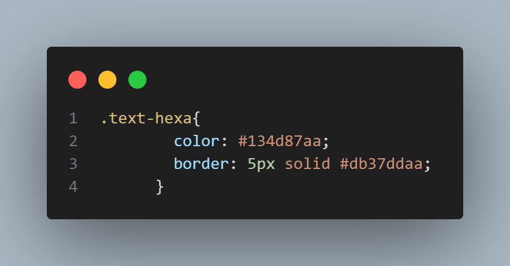

Filtro alpha y opacidad
Los colores en Css
Los códigos de colores HTML son el medio para representar el formato de colores que un ordenador puede leer y mostrar.
El filtro alpha permite controlar la opacidad de un elemento de la página.
Colores con Nombres
Los nombres de colores HTML pueden utilizarse con estilos HTML en
línea o en una hoja de estilo CSS.
Los navegadores modernos soportan 140 colores con nombre
Texto en color verde
texto en color rojo
texto en color azul
Colores con la funcion RGBA
Donde a representa el valor alpha ( como en transparencia alpha ). De hecho el parámetro alpha representa la opacidad y es un número decimal de 0.0 ( completamente transparente ) a 1.0 ( totalmente opaco ).
Ejemplo de texto en color utilizando RGBA
Colores con los valores hexadecimales
El uso de un valor alfa para actualizar la transparencia de un color cambiará el formato del código hexadecimal de #RRGGBBa #RRGGBBAA(donde alfa es A). Los primeros seis valores (los rojos, verdes y azules) siguen siendo los mismos.
El AAvalor en #RRGGBBAApuede variar desde el valor más bajo posible ( 00) hasta el valor más alto posible ( FF). Reducir el valor hará que la visibilidad se vuelva cada vez más tenue hasta que se vuelva transparente. Aumentar el valor hará que la visibilidad se vuelva cada vez más opaca.
Texto ulilizando colores con hexa
Colores con la funcion HSLA
La función hsla() define colores utilizando el modelo Tono-saturación-luminosidad-alfa (HSLA).
Los valores de color HSLA son una extensión de los valores de color HSL con un canal alfa, que especifica la opacidad del color.
h = hue Define un grado en el círculo de color
(de 0 a 360): 0 (o 360) es rojo, 120 es verde, 240 es azul
s = saturation Define la saturación; 0% es un
tono de gris y 100% es todo color (saturación total)
l = luminisidad Define la ligereza; 0% es
negro, 50% es normal y 100% es blanco
a = alpha Define la opacidad como un número
entre 0,0 (completamente transparente) y 1,0 (completamente opaco)
Ejemplo de texto utilizando HSLA

Opacidad
¿Que es opacidad?
La propiedad CSS opacity define la
transparencia de un elemento, esto es, en qué grado se superpone el
fondo al elemento. El elemento opacity modificará la opacidad de
fondos, textos, márgenes o cualquier otro elemento dentro de un bloque
div.
Este es un ejemplo

Opacidad en textos y bordes
Para únicamente modificar la opacidad de un texto necesitarás utilizar, por el contrario, la propiedad de color CSS y los códigos de color RGBA. En el cuadro de abajo te presentamos un párrafo que ha sido editado para ser más transparente respecto a un fondo negro.
Modificar el borde de un elemento solo deberás usar nuevamente la propiedad abreviada de fondo de CSS y valores de color en RGBA.
Este es un ejemplo de texto con opacity